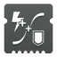
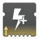

加速散热器
被动提供 +25 冷却效率与 ↑+2 填装速度，代价是伤害降低 2%。
热量武器如何运作？
被动提供 +25 冷却效率与 ↑+2 填装速度，代价是伤害降低 2%。
热量武器如何运作？
武器击杀时：
伤害提高 30%（手炮为 27%），+10 射程，开火恢复延迟／充能时间倍率／蓄力时间倍率 1.2×，持续 7 ↑8 秒。
收枪移除该增益。
对非同属性护盾或屏障勇士护盾造成伤害时：
对战斗人员护盾的伤害加成可叠加；击中同属性护盾或无护盾战斗人员时移除该增益。
拾取弹药块时：
生成 +1 弹药，下一发子弹在造成伤害时附着一枚黏性炸弹（可由动能合成弹药块触发）。
黏性炸弹在 0.8 秒后引爆，在 6 米范围内造成变动的动能伤害 [70 ↑77] 并施加疲惫，最远端衰减至 50% 伤害。
对战斗人员的伤害按战斗人员档位倍率折算，计为动能武器伤害。
武器或手雷击杀时：
伤害提高 6.7% ｜ 13.3% ｜ 20% ｜ 26.6% ｜ 33.3%，+20 操控性，持续 4.5 ↑5 秒。
手雷击杀直接赋予 5 层（收枪状态下击杀同样生效）。
再次以武器或手雷击杀可刷新持续时间；后台可触发，收枪后保留。
对受元素减益影响的战斗人员造成伤害时：
伤害提高 10% ↑11% ｜ 20% ↑22% ｜ 30% ↑33%。
加成随目标身上不同减益数量递增，达 3 种不同减益时达到上限。
被动提供 +10 ↑+12 空中效率。
武器击杀时：
每层 +30 ↑+32 空中效率，持续 5 秒，最多叠加 2 层（空中击杀直接赋予 2 层）。
再次武器击杀可刷新持续时间；收枪后移除。
被动提供 +20 ↑+30 弹药生成。
滞空期间：
+30 ↑+35? 填装速度，填装时长倍率 0.8×，精度锥角 -15?% ↑-20?%，自动瞄准锥角 -20?%。
拾取弹药块时：
填满弹匣，伤害提高 35% [15%]，+100? 填装速度，持续 6 ↑7 秒。
再拾取动能合成弹药块或特殊弹药块可延长持续时间 7 秒，上限 10 秒。
拾取威能弹药块获得 9 ↑10 秒持续时间。
手持带该特性的武器时持续时间才会计时。
弹匣余量在 50% 或以下开始填装时：
提供最高 0.8× ↑0.75× 填装时长倍率。
加成随剩余弹药减少平滑递增：从 50% 弹匣时的 0.9× ↑0.85× 平滑递增至空弹匣时的 0.8× ↑0.75×。
在彼此 4 秒内造成 3 次元素击杀，或击杀受元素减益影响的战斗人员时：
获得 1 层「辅助炸药」，最多叠加 4 层? ↑5 层（任意击杀方式均计入）。
对受元素减益的战斗人员造成动能武器击杀时，立即额外生成一枚微型导弹。
试试搭配瓦解或灼烧！
持有「辅助炸药」层数造成武器直击击杀时：
消耗 1 层，在目标阵亡位置上方生成 1 枚追踪的动能微型导弹。
微型导弹主动追踪 30 米内最近的战斗人员，命中后在极小范围内造成变动的动能伤害 [100]。
↑被动提供 +5 填装速度。
腰射精准命中时：
+100? 填装速度，填装时长倍率 0.x?×，蓄力时间倍率 0.4×，持续 4 ↑5 秒。
再次腰射精准命中可延长持续时间 4 秒，上限 8 ↑? 秒；收枪后保留。
造成精准命中时：
蓄力时间倍率 0.75×，持续 3 ↑4 秒；收枪后移除。
对战斗人员元素护盾与屏障勇士护盾伤害提高 5%。
子弹可穿透战斗人员一次。
被动提供 +5 ↑+7 射程。
武器击杀时：
伤害提高 15%，移动速度提升至上限，持续 5 ↑5.5 秒。
再次击杀可刷新持续时间；收枪后保留。
在彼此间隔 5 秒内造成与弹匣挂钩的伤害次数时：
下一次伤害生成 1 枚能量球，提供 0.87% ↑1.1% 超能能量（计数收枪后保留）。
生成能量球后进入 0.5 秒冷却，冷却期间造成的伤害不计入；Perk 造成的灼烧持续伤害不计入。
收枪 3.5 ↑3.3 秒后：
填满弹匣（不触发 Perk「杀戮弹匣」等填装类效果）。
举枪切出本武器时：
伤害降低 20%，+100 操控性，充能时间倍率 0.7×，持续 2 ↑2.5 秒。
线性融合步枪开火可刷新持续时间。
需要收枪 3 秒后才可再次触发。
在距上一武器伤害 7 秒内用全部 3 把已装备武器各造成伤害时：
伤害提高 30%，持续 10 ↑11 秒。
生效期间无法刷新，伤害计时暂停；收枪后保留。
武器击杀时：
弹丸／弹道散布 -20%，持续 7.5 ↑8.5 秒。
生效期间无法刷新；收枪后保留。
武器击杀时：
获得 1 层「信标弹药」，持续 6 ↑7 秒，最多叠加 4 层。
造成额外伤害时若剩余时间不足 4 秒则补至 4 秒；后台可触发，收枪后保留。
「信标弹药」效果：
+15 填装速度，填装时长倍率 0.9×，弹道追踪锥角 +45%。
额外层数仅提高弹道追踪强度；追踪仅在锁定准星激活时生效。
击杀后 ? 秒内完成填装时：
获得「迷惑爆发」，持续 6 ↑7 秒；收枪后保留。
生效期间下一次直击命中时：
在战斗人员上方投出一枚闪光弹，0.85 秒后爆炸。
闪光弹造成 10 [4] 点动能伤害，并使 10 米内战斗人员迷失方向 3.5 ↑? [1 ↑1.25] 秒。
造成对立阵营属性击杀时：
伤害提高 25%，持续 8.5 ↑10.5 秒。
再次以对立阵营来源击杀可刷新持续时间；后台可触发，收枪后保留。
被动提供：
+1 弹匣容量、+5 备弹，开火恢复延迟 0.75×。
代价为伤害降低 25%，-30 ↑-25 爆炸范围，-20 ↑-15 填装速度。
狼群弹药以及 Perk「集束炸弹」、Perk「幼雏」等附加伤害均受该伤害惩罚削减。
造成武器爆炸伤害时：
每层 +10 ↑+13 手雷属性，持续 5 秒，最多叠加 5 层（最高 +50 ↑+65 手雷属性）；收枪后保留。
处于战斗人员 15 米内造成近战伤害时：
10 ↑11 秒内下一次点射伤害提高 500% [100%]，+100 操控性。
触发后进入 4 秒冷却；后台可触发，生效中收枪则移除。
需要冲刺、滑铲或下砸的强化近战无法触发 Perk「钝器处决弹药」。
拾取弩箭时：
+? 操控性、+? 填装速度，持续 15 ↑16? 秒。
被动提供 +30 弹匣属性。
作为最后存活的取得武器击杀时：
填满弹匣。
弹匣内有弹药且机瞄不开火满 1.5 ↑1.4 秒后（自按下机瞄起算）：
机瞄下下一发子弹瞄准辅助衰减距离提高 10%，弱点伤害提高 40%（威能狙击步枪与偃月为 30%）。
弱点伤害机制说明：
对带护盾战斗人员的弱点命中、以及无精准倍率武器命中弱点均享受加成；对异域武器「神圣裁决」生成的力场无效。
身上带有虚空覆盖护盾、冰霜护甲或织造铠甲时：
+30? 稳定性，+? 瞄准辅助，?% 受击抖动抗性。
↑脱离状态后效果残留 2 秒。
在彼此间隔 2 秒内造成与弹匣挂钩的直击次数时：
2 秒内的下一次直击施加灼烧（计为武器伤害；计数收枪后保留，不限同一目标）。
施加灼烧后进入 0.5 秒全局冷却。
主要武器施加 10+5 层灼烧 [4+5? 层]；特殊与威能武器施加 20+10 层灼烧。
灼烧弹直击以及对已带灼烧目标的直击均可施加。
弹匣内有弹药且机瞄不开火满 1.5 ↑1.4 秒后（自按下机瞄起算）：
下一次直击击杀让目标爆炸，在 8 米内造成同属性伤害 [?]?（边缘衰减至 30%）。
退出机瞄或取得击杀后移除；手持装有弹药的武器机瞄不开火满 1.4 秒可再次触发。
火箭发射器「核心星辰 IV」上爆炸击杀同样计入，但必须在保持机瞄状态下取得击杀。
5 秒内用其他武器造成多次精准命中或取得击杀时：
获得「级联点就绪」，持续 5 秒。
「级联点就绪」生效期间切出本武器时：
获得「级联点」，持续 2.5 ↑2.75 秒。
开火恢复延迟：机枪与微型冲锋枪为 0.7×，其余武器为 0.6×。
被动提供 +20 操控性与 +20 填装速度。
成为最后存活的时：
+100 操控性、+100 填装速度、+? 瞄准辅助，受击抖动抗性 50%，精度提高，瞄准镜高亮目标并在机瞄期间保留雷达。
↑被动为刀剑提供 +20 防御持久。
持续交战满 12 ↑11.5 秒（每 5 秒内都保持造成或受到伤害）时：
获得「混沌重塑」×1：伤害提高 20%，持续 7 秒（造成或受到伤害刷新；后台可触发，收枪后保留）。
维持「混沌重塑」×1 再满 12 ↑11.5 秒时：
升级为「混沌重塑」×2：伤害提高 35%，持续 7 秒并激活治疗效果（刷新与保留规则相同）。
「混沌重塑」×2 治疗效果：
持枪时以 5 点生命值/秒的速率蓄积持续治疗量，蓄满 35 点生命值（7 秒）后或收起该武器时自动触发。
触发后按已蓄积量以 5 点生命值/秒恢复生命值；持枪满 7 秒则实际上转为常驻生效。
激活期间会阻止其他治疗来源将生命值恢复至（200 − 已蓄积治疗量）以上；在视觉上不受「彪悍」修改器的治疗惩罚削减，触发时生命值条会来回跳动。
实际使用中就当作 5 点生命值/秒的效果，缺掉的「已恢复生命值」反正由治疗效果补上。
我不断看到更多讨论这件事的帖子。这件事被夸大得离谱
弹匣容量在 50% ↑40% 及以上时：
直击命中触发冰影爆发，对 4? 米内战斗人员施加 60 层减速（速射融合步枪与火箭手枪为 40 层），持续 4+4 [1.5+0.5] 秒。
每次射击至多触发一次。
触发支援型框架加速时：
伤害提高 25% [12.5%]，持续 10 ↑11 秒；收枪后保留。
造成偃月弹丸击杀时：
偃月近战伤害提高 60% [30%]，持续 10 ↑11 秒；收枪后保留。
后续造成弹丸或近战伤害可延长持续时间 5 秒，上限 10 ↑11 秒。
完成填装时：
随机提升 10% ↑13% 至 50% 弹匣容量（向上取整，平均提升 30% ↑31.5% 弹匣容量）。
造成爆炸伤害时：
释放 8 枚集束炸弹。集束炸弹落地引爆，每枚在 4 米内造成最高 150 ↑165 [11 ↑12] 伤害（无距离衰减）。
↑被动提供 +10 刀剑弹药容量与 +10 弹匣属性。
手雷技能能量获取：
日后补上 :)
弹匣余量高于 50% 时：
+50 ↑+55 填装速度，填装时长倍率 0.95×。
点射中全部发数均命中、或造成武器击杀时：
伤害提高 20%，充能时间倍率 0.9×，持续 2 ↑2.5 秒；收枪后保留。
拾取元素拾取物或能量球时：
消散 33?% ↑35% 发热量。
处于 2 名战斗人员 15 米内时：
充能／蓄力时间倍率 0.85×，↑生效期间 +10 稳定性；脱离条件后残留 1.5 秒。
↑被动提供 +5 稳定性。
开始格挡后 0.5 秒内受到伤害时：
刀剑伤害提高 50%，持续 2 ↑3 秒。
武器击杀时：
获得「结晶残花」，持续 4 秒。
「结晶残花」生效期间造成武器击杀时：
目标阵亡时释放 1 枚冰影追踪弹。
追踪弹随机飞行约 3? 米，消散时生成 1 座中型? ↑大型冰影水晶。
↑被动提供 +5 爆炸范围。
在彼此间隔 6 秒内造成与弹匣挂钩的命中次数时：
对构造体与载具伤害提高 40%，持续 5 ↑6 秒（生效期间额外命中刷新持续时间）。
同时从备弹填充 10% 弹药（向上取整，无内置冷却，再次达成命中即可反复触发）。
对构造体与载具命中时：主要武器按 1.5× 计进度，特殊武器按 2× 计进度。
发热量从 0% 上升至 50% 的过程中，加成随热量平滑衰减：
0% 发热量时提供最高 +? ↑22? 射程、+? ↑+? 操控性、精度锥增长 -?% ↑-?%。
加成自 0% 发热量时的 100% 效果平滑降至 50% 发热量时的 50% 效果。
武器击杀时：
提供 10% ↑11% 手雷技能能量（融合步枪、偃月、霰弹枪与狙击步枪为 20% ↑22%）。
使用手雷技能时：
填满弹匣（弹匣填充有 3 秒冷却）。
造成精准击杀时：
目标触发虚空爆发，对 7 米内战斗人员施加虚弱。
触发后进入 1.5? ↑1 秒冷却。
造成精准击杀、或在彼此间隔 3 秒内造成 3 次击杀后 5.2 秒内完成填装时：
开火恢复延迟 0.7×，持续 6 ↑7 秒。
重新触发可刷新持续时间；收枪后移除。
武器击杀时：
获得「铤而走险」×1：伤害提高 10%，持续 7 ↑7.5 秒（武器击杀刷新）。
手雷或近战击杀时：
获得「铤而走险」×2：伤害提高 20%，持续 7 ↑7.5 秒（武器击杀刷新）。
「铤而走险」×2 期间再造成手雷或近战击杀时：
升级为「铤而走险」×3：伤害提高 30%，持续 7 ↑7.5 秒（武器、手雷或近战击杀刷新）。
后台可触发，收枪后保留。
武器击杀时：
目标触发虚空爆发，对 7 米内战斗人员施加不稳定。
自身获得「不稳定弹药」，持续 3 ↑4.5 秒。
触发后进入 1.5 秒冷却。
在彼此间隔 ? 秒内造成 25 ↑20 次命中时：
在目标周围触发爆炸，造成 250 [100] 同属性伤害，在 8 米内衰减至 50% 伤害。
拾取虚空裂口时：
获得「维度裂隙」，持续至下一次武器击杀为止（后台可触发，收枪后保留）。
「维度裂隙」激活期间造成武器击杀时：
接下来 5? 秒内，武器击杀提供 22.5 ↑25 点虚空覆盖护盾，持续 8+4 秒。
后续武器击杀可将该状态持续时间刷新至 5 秒。
其他武器取得击杀后 5 秒内切出本武器时：
机瞄时长倍率 0.75×、精度锥角 -25%、+30 空中效率，持续 7 ↑8 秒；收枪后保留。
「失调协议」激活期间造成武器击杀时：
主要武器填满弹匣 ｜ 特殊武器与威能武器每次击杀返还 1 发弹药。
被动提供 -200 爆炸范围、伤害降低 25%、爆炸伤害半径缩小 15%。
手雷爆炸命中时：
爆炸 6 米内、与战斗人员迷失方向 4.5 秒（勇士与免疫）。
命中短暂剥夺 HUD，致盲扭曲至多 ? 秒（随爆炸距离衰减）。
击破元素护盾、屏障或护盾时：
目标受到的动能伤害提高 50%，持续 5.5 ↑? [5] 秒（不影响冰影与缚丝伤害）。
可多次触发叠加，每层独立计时并以乘法叠加，且与所有其他增益和减益叠加。
造成精准击杀时：
目标爆炸，在 8 米内造成同属性伤害 [95.3]（边缘衰减至 0%）。
被动提供 +30 填装速度、填装时长倍率 0.9×，以及 -20 弹匣容量。
填装时每次动作额外填入 1 ↑2 发弹药。
刀剑击杀时：
+60 ↑+65 防御效率、+60 ↑+65 防御抗性、+60 ↑+60 防御持久、+60 ↑+65 充能效率；收枪后移除。
扣住扳机持续开火期间：
每射击一发 +1 稳定性，精度锥角 -?% ↑-?%，精度锥增长 -10% ↑-12.5%。
持续开火 10 ↑8 发后达到满额加成：+10 稳定性、精度锥增长 -100%、移除全部弹丸散布。
切出刀剑时：
3 秒内单次突进挥砍距离提高 80% ↑100%（空中突进距离降低 20%）。
效果结束后进入 3 秒冷却；收枪后移除。
手持该武器冲刺 1.5 秒时：
+? 操控性、操控性动画倍率 0.95×、+20 填装速度、填装时长倍率 0.95×，持续 3 ↑? 秒（再次冲刺刷新）。
处于增幅状态时：
常驻获得上述加成，并将填装速度加成提升至 +60 ↑+?。
造成元素伤害时，每使用一种不同元素属性获得 1 层「元素磨砺」，持续 20 ↑23 秒，最多叠加 5 层。
叠层时刷新持续时间，达到 5 层后不再刷新；后台可触发，收枪后保留（动能伤害不触发）。
切出刀剑时：
伤害提高 30%，持续 1.5 ↑2? 秒。
效果结束后进入 2? 秒冷却。
武器击杀时：
每层 +5 射程、+8 稳定性、精度锥角 -1.25%，持续 7 ↑7.5 秒，最多叠加 4 层（精准击杀直接赋予 2 层）。
再次击杀可刷新持续时间；收枪后保留。
造成伤害命中时：
获得 1 层「启迪行动」，持续 2 秒，最多叠加 12 层。
每层平均提供约 +4 操控性与填装速度，满层最高 +50 ↑+55? 操控性与 +50 ↑+55? 填装速度。
各层具体加成：
+2 ｜ +5 ｜ +5 ｜ +3 ｜ +5 ｜ +5 ｜ +5 ｜ +5 ｜ +3 ｜ +2 ｜ +5 ｜ +5 操控性与填装速度。
处于盟友 15 米内时：
+30 ↑+35 操控性、+40 ↑+45 填装速度；脱离条件后残留 1.5 秒。
用另外两把已装备武器均造成伤害后切出本武器时：
完全填满弹匣（持续伤害同样计入）。
↑被动提供 +10 弹药生成。
将 50% 基础直击伤害转为延迟引爆的爆炸伤害：
箭矢命中后按飞行距离延迟引爆，在 3 米内造成爆炸伤害与更强踉跄，对战斗人员爆炸部分伤害提高 30%。
直击精准倍率经折算提高以补偿无法暴击的爆炸部分。
整体伤害表现：躯干伤害提高 15%，精准伤害提高 15% / 精准倍率 [伤害保持不变]。
↑被动提供 +5 精度。
拾取能量球时：
获得 1 层「爆炸光能」，最多叠加 6 ↑7 层（后台可获得，阵亡清空）。
将 50% 基础直击伤害转为即时爆炸伤害：
直击命中时在 3 米内引爆并造成更强踉跄，对战斗人员爆炸部分伤害提高 30% [手炮降低 7%]。
直击精准倍率经折算提高以补偿无法暴击的爆炸部分。
整体伤害表现：躯干伤害提高 15%，精准伤害提高 15% / 精准倍率 [躯干伤害不变，精准伤害基本不变]。
↑被动提供 +5 填装速度。
护盾生命值受损时：
属性加成随护盾降低平滑递增，在护盾击破（濒死）时达到满额加成：
最高 +30 ↑+33 操控性、精度锥角 -40% ↑-44%、精度锥增长 -17% ↑-19%。
加成自 80 点护盾生命值时的 0% 线性提升至 0 点时的 100%，持续至护盾恢复至 80 点以上。
武器击杀时：
获得填装加成，持续 3.5 秒，最多叠加 5 层；收枪后保留。
被动提供 +20 ↑+30 弹药生成。
蹲伏期间：
+50 ↑+55? 填装速度、填装时长倍率 0.8×、切枪动画时长倍率 0.8×。
造成精准击杀时：
目标爆炸，在 7.5 米内造成最高 104 [80] 点烈日伤害，并提供 +50 ↑+55 填装速度，持续 6 秒。
填装加成在收枪后保留。
对战斗人员的伤害因武器类型与战斗人员等级而异 :)
处于 2 名盟友 15 米内时：
精准伤害提高 20% ↑（生效期间额外 +10 操控性）。
蹲伏期间：
+20 ↑+25 稳定性、+30 ↑+35 操控性、精度锥角 -40%、精度锥增长 -17%、水平后坐力 -80%。
融合步枪加成减半：+10 ↑+13 稳定性、+15 ↑+18 操控性、精度锥角 -20%、精度锥增长 -8.5%、水平后坐力 -40%。
格挡期间承受伤害时：
触发正面锥形爆炸（最远约 8? 米），造成最高 110 [?] 同属性伤害并使战斗人员迷失方向 5 ↑6 秒。
伤害自贴脸 75 [14] 随距离提升至远端 110 [45]（对的震荡强度同样随距离变化）。
伤害按战斗人员档位倍率折算，计为武器伤害；触发后进入 2.5 秒冷却。
以精准命中打出弹匣容量 35%（向上取整）的发数时：
伤害提高 25%，持续 11 ↑12 秒。
收枪或填装重置命中计数；生效期间可刷新，收枪后保留（不提高爆炸类伤害）。
在彼此间隔 2 ↑3 秒内造成 4 次精准命中时：
向弹匣返还 2 发弹药（无法超出基础弹匣容量；计数间隔在收枪后保留）。
护盾存在时被动提供 +20 射程。
护盾被击破时失效；护盾完全回满 1 ↑0.5 秒后重新生效。
持续交战满 12 秒（每 5 ↑5.5 秒内保持造成或受到伤害）时：
伤害提高 15%，+100 操控性、+100 填装速度，持续 7 秒。
造成或受到伤害可刷新持续时间；后台可触发，收枪后保留。
在霰弹枪上被动提供 0.9× 开火恢复延迟。
在其余武器类型上等同设置中的全自动开火。
推测额外为「最后一支舞」「最终的沉沦」与「寂寞」提供 +5 稳定性。
机瞄期间：
弹丸散布 -3.25%，代价为精准伤害降低 7.6%（精准倍率由 1.1078× 降至 1.0294×）。
↑被动提供 +2 操控性。
弹丸发射 0.2 秒后：
爆炸与灼烧持续伤害随飞行时间递增，最高提高 35%。
自 0.2 秒时的 0% 线性提升至飞行 1.1 秒时的 35%。
↑被动提供 +5 爆炸范围。
武器击杀或进入增幅后 ? 秒内完成填装时：
获得 1 层「换挡」，持续 ↑15 秒，最多叠加 5 层（后台可触发，收枪后保留）。
各层武器伤害加成：
×1 +15% ｜ ×2 +20% ｜ ×3 +25% ｜ ×4 +30% ｜ ×5 +35%
能量武器命中匹配属性的战斗人员元素护盾时向弹匣返还 1 发弹药。
击破战斗人员护盾、屏障或护盾时：
填满弹匣。
↑被动提供 +5 操控性。
武器击杀时：
获得「黄金三角」×1：伤害提高 15%，持续 7 ↑8 秒（再次击杀刷新；收枪后移除）。
「黄金三角」生效期间，以同属性手雷或充能近战击杀时：
升级为「黄金三角」×2：伤害提高 50%，持续 10 秒（手雷或充能近战击杀刷新；收枪后移除）。
造成充能近战伤害或取得近战击杀时：
填满弹匣（弹匣填充有 3 秒冷却）。
↑被动提供 +5 操控性。
用其他武器取得击杀后 3 秒内切出本武器时：
伤害提高 20%，+15 操控性，持续 7 ↑8 秒；收枪后保留。
造成精准击杀、或在 3 秒内连续取得 3 次击杀时：
在目标阵亡位置生成 1 ↑2（↑10?% 概率）只线虫。
造成非精准直击伤害时：
精准伤害提高（精准倍率折算 ×1.2），自动瞄准锥角 +3?%，持续 0.55 秒（非精准伤害刷新）。
↑被动提供 +5 稳定性。
弱点机制说明：未判定为精准命中的弱点命中（如带护盾目标）同样享受加成；精准命中非弱点则不触发。
武器击杀后 5.3? ↑? 秒内完成填装时：
自己获得 2 层治愈；15 米内的盟友获得 1 层治愈。
武器击杀时：
获得 1 层「热力四射」，持续 5.5 ↑6.5 秒，最多叠加 2 层；收枪后保留。
武器击杀时：
获得 1 层 [2 层]「高地」。
处于目标上方 2? 米 [主要武器 5 米 ｜ 特殊与威能武器 2 米] 且双脚着地造成伤害时：
获得 3 层 [主要武器 1 层 ｜ 其余 3 层]「高地」（触发那一发立即享受加成）。
「高地」加成（持续 7 秒，再次高处造成伤害或击杀刷新；收枪后保留）：
伤害提高 10% [5%] ｜ 17.5% [10%] ｜ 25% [15%]。
↑被动提供 +5 填装速度。
被动提供 +5 ↑+7 射程。
命中时：
造成更强受击抖动与踉跄。
第 1 档与第 2 档战斗人员可被反复打断硬直，更高档位目标硬直更快。
对造成的受击抖动提高 5% 到 10%（取决于武器伤害与框架）。
弹匣余量降至 50% ↑55% 以下时逐步生效：
直击伤害随弹药消耗平滑提升，在弹匣余量 7.5% 时达到满额加成：
直击伤害提高 12.1% [3%] 至 25.6% [6%]（不提高爆炸类伤害）。
腰射期间：
瞄准辅助、准星黏滞与伤害衰减起始与结束距离提高 20%（霰弹枪、狙击步枪、融合步枪与「遗言」不受伤害衰减距离提升影响）。
+15 瞄准辅助、精准判定角度 +2.7°、精度锥角 -30%、+25 稳定性。
↑属性与衰减距离提升幅度更强（精度锥角不变）。
格挡且静止不动时：
偃月弹丸命中提供的护盾能量提高 90% ↑100%（弹丸命中默认提供 25% 能量）。
被动提供火箭直击伤害提高 10%，+10 ↑+12 稳定性。
武器击杀时：
特殊弹药生成进度 1.15×，威能弹药生成进度 1.1×，持续 5 ↑5.5 秒（与搜寻模组倍率相加）。
再次武器击杀将持续时间延长至 7 ↑7.5 秒。
武器击杀时：
目标爆炸，在 4 米内造成最高 30 点烈日伤害，并施加 30+10 层 ↑+15 层 灼烧。
击杀及以上战斗人员与时触发更大爆炸：在 8 米内施加 40+10 层 ↑45+15 层 灼烧。
爆炸与灼烧伤害享受武器增伤与易伤加成，且不受战斗人员档位倍率折算削减。
在 2.5 秒内连续多次射击未命中时：
+25? 稳定性，持续 2.5 秒（再次未命中刷新；造成命中后 1? ↑? 秒移除）。
被动提供 +20 瞄准辅助，代价为 -20 ↑-15 射程。
被动提供 +20 稳定性，代价为 -20 ↑-15 填装速度。
被动提供 +20 射程，代价为 -20 ↑-15 稳定性。
在彼此间隔 3 秒内造成多次直击命中时：
下一次直击命中施加震颤（计数收枪后保留，不限同一目标；处于增幅时减少所需命中数）。
周围 15 米内无战斗人员时：
+10 射程、+30 ↑+35 填装速度、精度锥增长 -5?% ↑-?%。
冲刺 1.5 秒后滑铲时：
伤害提高 15%，充能时间倍率 0.8×，持续 ? ↑? 秒。
武器击杀后 3.6 秒内完成填装时：
伤害提高 25%，持续 5 ↑5.5 秒（再次触发可刷新；收枪后移除，不提高爆炸类伤害）。
武器击杀时：
获得 1 层「击杀记录」，最多叠加 3 层（填装或收枪时清空层数）：
伤害提高 10% ｜ 20% ｜ 30% [5% ｜ 10% ｜ 15%]。
↑被动提供 +10 弹匣属性。
武器击杀时：
+20 射程、+50 敏捷、+40 操控性，伤害衰减起始与结束距离提高 5%，持续 5 ↑5.5 秒。
再次武器击杀可延长持续时间 5 秒，上限 8 秒；收枪后移除。
对同一目标连续直击达标（相邻命中间隔不超过 3 秒，收枪后计数保留）：
延迟 0.25 秒后在目标脚下每秒释放 1 道冲击波（共 3 道，距上一道冲击波 2 秒内不可再次对该目标触发）：
每道冲击波在 6 米内造成最高 90 [20] 点动能武器伤害。
冲击波伤害加成：
伤害取决于最初触发时战斗人员的档位；在或身上触发时伤害提高 33.3%。
享受动能武器额外伤害加成，并按战斗人员档位倍率折算。
被动提供 +50 ↑+55 爆炸范围。
火箭直击目标后附着，延迟 3 秒引爆，爆炸伤害提高 35%。
仅增幅爆炸部分伤害，实际总伤提升约 26%–27%，且不增幅狼群弹药。
拾取威能弹药块时：
获得 25% ↑35% 的特殊弹药备弹（双特殊武器配置时各自减半至 12.5% ↑17.5%）。
后台可触发，收枪后生效。
拾取能量球时：
获得 1 层「光中藏弹」，最多叠加 ? ↑6 层。
造成武器击杀时：
消耗 1 层，提供 1.25× 特殊弹药生成倍率。
处于增幅、焕光或吞食状态时：
+? 操控性、+? 填装速度，机瞄时长倍率 0.?×。
被动提供 +5 ↑+6 瞄准辅助、机瞄时长倍率 0.9× ↑0.85×、+15 ↑+16 空中效率。
周围 15 米内无盟友时：
加成翻倍为 +10 ↑+11 瞄准辅助、机瞄时长倍率 0.8× ↑0.75×、+30 ↑+32 空中效率。
造成精准击杀后 ? 秒内完成填装时：
获得「幸运的一击就绪」；收枪后保留。
「幸运的一击就绪」期间造成精准命中时：
获得「幸运的一击」，持续 7 秒。
生效期间每次精准命中向弹匣返还 1 发弹药。
造成元素减益时：
+50 填装速度、+20 瞄准辅助，机瞄移动速度惩罚降低 20%，持续 9 ↑10 秒。
再次触发可刷新持续时间；后台可触发，收枪后保留。
造成精准击杀时：
获得 1 层「精准终结」，最多叠加 10 层（收枪后保留；生效期间无法叠层）。
持有「精准终结」完成填装时：
将全部层数转为「宏伟之嚎」层数（收枪后保留）。
每开火一发消耗 1 层，伤害提高 50% ↑55%，伤害衰减起始与结束距离提高 ?%。
生效期间造成精准击杀获得 1 层「宏伟之嚎」。
用任意武器造成武器击杀时：
获得「武器大师」×1：伤害提高 15%，持续 7 ↑8? 秒；收枪后保留。
「武器大师」×1 期间用任意武器造成武器击杀时：
升级为「武器大师」×2：伤害提高 25%，持续 4 ↑5? 秒。
继续击杀刷新持续时间，到期后降回 ×1；收枪后保留。
造成精准命中时：
获得 1 层「巨脉蜻蜓」，持续 3.5 ↑4 秒，最多叠加 3 层。收枪后保留。
造成精准击杀时：
目标爆炸并在 7.5 米内造成武器同属性伤害 [95.3]（边缘衰减至 50%），伤害随层数提高：
×1 等同 Perk「蜻蜓」 ｜ ×2 +40% [?%] ｜ ×3 +67.7% [?%]。
武器击杀后 ? 秒内完成填装时：
伤害提高 40%，持续 ? ↑3 +（2 × 击杀数）秒，上限 20 秒。
击杀后再次填装可延长持续时间（最多 20 秒）；击杀计数收枪后保留，填装后重置。
偃月近战击杀时：
获得护盾能量，格挡期间移动速度提高 ?%，持续 10 秒。
机瞄期间：
+10 ↑+11? 瞄准辅助，机瞄移动速度惩罚降低 10%。
武器击杀后 3.6 秒内完成填装时：
按填装前短时间内的连杀数（相邻击杀间隔不超过 3.5 秒，击杀计数在收枪后保留）提高武器伤害，持续 5 ↑5.5 秒：
1 名 +17% ｜ 2 名 +33% ｜ 3 名以上 +50%。
每次重新触发都会直接覆盖当前增益；收枪后移除。
机瞄不开火满 1 ↑0.9 秒后（自按下机瞄起算）：
机瞄期间受击抖动抗性 35%。
处于腰射状态造成武器击杀时：
伤害衰减起始与结束距离提高 45%，瞄准辅助衰减起始与结束距离提高 ?%。
+30 稳定性、精度锥角 -95%?、精度锥增长 -95%?、精准判定角度 +约 3°（上限不超过瞄准辅助锥），持续 7 ↑8 秒；收枪后移除。
在彼此间隔 3 秒内命中 3 名不同战斗人员时：
伤害提高 35%，持续 10 ↑11 秒。
生效期间无法刷新；收枪后保留。
单次射击命中 12 ↑10 颗弹丸时：
3 秒内下一次近战伤害提高：霰弹枪 +150% [100%] ｜ 手炮 +75% [50%]；收枪后移除。
不与对冻结非首领目标的近战易伤叠加，两者取最高值。
武器击杀时：
获得 1 层「猛攻」，持续 4.5 ↑5? 秒，最多叠加 3 层（再次击杀刷新；收枪后保留）。
使用手雷技能时：
从备弹填充 50% 弹匣（收枪前仅能填充一次），武器属性变为与所装备手雷一致直至收枪。
动能武器转换后失去对战斗人员的动能伤害加成；替换手雷技能的效果同样可触发。
↑被动提供 +5 操控性。
造成精准击杀时：
+70 填装速度，填装时长倍率 0.9×，持续 6 ↑7 秒；收枪后移除。
被动提供 2% 伤害提高 ↑与 +2 操控性，代价是冷却效率 -10。
热量武器如何运作？
拾取特殊或威能弹药块时：
填满弹匣，并使弹匣容量丰盈满溢至 200% ↑220%（后台可触发）。
造成同阵营属性击杀时：
伤害提高 20%，持续 6 ↑7 秒。
继续以同阵营来源击杀可刷新持续时间；后台可触发，收枪后保留。
交战满 6 秒（每 3 ↑3.5 秒内保持造成或受到伤害）时：
+30 空中效率，受击抖动抗性 35%，持续 10 ↑12 秒。
造成或受到伤害可刷新持续时间；后台可触发，收枪后保留。
使用职业技能时：
从备弹填充 50% 弹匣（收枪前仅能填充一次），武器属性变为与当前装备超能一致直至收枪。
↑被动提供 +5 操控性。
保持至少 2 米/秒移动时：
移动满 2 秒获得「永动不歇」×1，持续移动满 10 ↑9 秒升级为 ×2。
后台可触发，保持移动时收枪保留，停止移动后残留 0.5 秒。
将微型冲锋枪的伤害与弹匣配置转换为精密框架数值（不改变固有框架特性）。
造成武器直击命中时：
获得 1 层「精准工具」，持续 1.1 秒（蓄力／拉弓武器为 2.1 秒），最多叠加 6 层。
直击命中刷新持续时间，射击未命中清空全部层数；收枪后保留。
各层精准与弱点伤害加成：
×1 +4.17% ↑+5% ｜ ×2 +8.34% ↑+10% ｜ ×3 +12.5% ↑+15% ｜ ×4 +16.7% ↑+20% ｜ ×5 +20.83% ↑+25% ｜ ×6 +25% ↑+30%
特殊枪型：适配点射线性融合步枪每 2 次命中叠 1 层；重型点射每次点射至多叠 1 层。
处于战斗人员 15 米内造成武器击杀时：
每层 +15 ↑+18 近战属性，持续 10 秒，最多叠加 3 层（最高 +45 ↑+54 近战属性）。
武器击杀时：
提供 10% ↑11% 近战技能能量（融合步枪、偃月、霰弹枪与狙击步枪为 20% ↑22%）。
造成近战伤害时：
+35 操控性，持续 3 秒。
护盾生命值降至 30% ↑35%? 以下时：
自动填满弹匣，并提供 +50 操控性、切枪动画时长倍率 0.95×。
持续至护盾回升至 30% ↑35%? 以上且额外残留 1 秒；后台可触发，收枪后保留。
切出本武器时：
+100 切枪操控性、拔枪动画时长倍率 0.95×，持续 1 秒或直到进入机瞄。
↑被动提供 +5 操控性。
武器击杀时：
获得「狂暴」，伤害提高 10% ｜ 21% ｜ 33.1%，持续 4.5 ↑5 秒。
继续击杀刷新持续时间，到期后逐层衰减；收枪后保留。
机瞄期间：
+10 射程、放大倍率提高 10%、弹头速度提高 5%。
↑被动提供 +5 操控性。
造成精准命中时（任意暴击伤害均可触发）：
获得 1 层「快速命中」，持续 2 秒，最多叠加 5 层；收枪后保留。
↑属性与填装时长倍率提升幅度更强。
生效期间继续武器击杀可延长持续时间 6 秒，上限 15 ↑17 秒。
以支援型框架治疗命中盟友时：
为自己恢复 3 ↑3.5 点生命值。
造成元素击杀时：
获得 1 层「重组」，最多叠加 10 ↑8 层（后台可获得，收枪后保留）。
下一发子弹消耗全部层数，每层使伤害提高 10% ↑12.5% [5% ↑6.25%]，满层最高 +100% [50%]。
未开火满 6 ↑5.5 秒后，此后每 6 ↑5.5 秒：
从备弹自动填入 25% 弹匣，最高可丰盈满溢至 200% 弹匣容量。
后台可触发，收枪后保留。
命中战斗人员时：
获得 2 层「转向」，最多叠加 30 层；收枪后保留。
命中、、或载具时：
单次开火消耗至多 3 ↑2 层，每层使伤害提高 33% ↑50%，消耗 3 ↑2 层时达到最高 +100%（命中免疫目标同样消耗）。
在 2 ↑3 秒内造成 3 次充能刀剑命中时：
直接生成 1 发弹药。
偃月格挡期间承受伤害时：
从备弹填充 1 发弹药；触发后进入 1 ↑? 秒冷却。
击杀受到虚空减益的战斗人员时：
获得虚空覆盖护盾，持续 8+4 ↑9+4.5 秒。
被动提供 +30 弹匣容量。
弹匣余量在 100% 或以上时：
伤害提高 30% ↑33%。
直击击杀让目标爆炸，在 ? 米内造成不等的 [162] 同属性伤害。
伤害按战斗人员档位倍率折算（线性融合步枪对战斗人员另有 1.3× 倍率）。
武器击杀时：
+100 爆炸范围，持续 5.5 ↑6 秒。
再次武器击杀刷新持续时间；收枪后保留?（不影响区域拒止框架的持续伤害力场）。
在射击后 6 秒内累计 2 次未命中时：
直接生成 1 发弹药。
打空弹匣时：
从备弹填充已造成伤害次数 60% ↑70% 的弹药（向上取整，计数收枪后保留）。
至少需射出弹匣容量的 28.5% 才能触发填充；触发填充后 1? 秒内的命中不计入。
适配点射线性融合步枪表现：每一束单独计数，填充量为造成伤害次数的 14%。
被动提供 +5 ↑+6 射程与 +10 ↑+11 稳定性。
子弹碰撞硬表面必定弹射。
粉碎冰影水晶或击杀被冻结的战斗人员时：
获得 1 ↑2 层冰霜护甲（偃月近战击杀同样可触发）。
武器击杀时：
获得 1 层 ↑（未带充能时额外 +1 层） 电光充能。
处于增幅状态下造成武器击杀时：
获得 2 层电光充能。
被动提供 +3 ↑+4 射程与 +7 ↑+8 稳定性。
子弹兼具穿透目标、硬表面必定弹射与更强的受击抖动效果（集 Perk「穿甲弹」、Perk「弹跳型弹药」与 Perk「大口径弹药」特性于一体）。
在 1.5 ↑2 秒内造成 3 次充能刀剑直击命中时：
获得 5% 特殊弹药备弹（双特殊武器配置时减半至 2.5%）。
若重击消耗掉全部剩余威能弹药时：
地面重击伤害提高 67%。
击破匹配属性的战斗人员元素护盾时：
使 7 米内战斗人员迷失方向 5 秒。
命中特殊或威能弹药弹药块时：
远程拾取弹药并填满所有已装备武器（触发弹药拾取效果，溅射伤害同样可触发；仅在弹药未满时生效）。
亦可远程拾取能量球（无额外效果）。
↑被动提供 +5 射程。
武器击杀时：
获得 2 层「射击切换」，最多叠加 6 层。
切出或收起武器时：
收枪时消耗 1 层，提供 +100 切枪操控性与切枪动画时长倍率 0.7× ↑0.65×。
本武器收枪期间用其他武器或技能取得击杀后，切出本武器时：
获得 1 层「花招戏法」，持续 8.5 ↑9 秒，最多叠加 3 层；收枪后移除。
使用职业技能时：
此后 8 ↑9 秒内，接下来 5 次命中对未被割裂的目标施加割裂。
对未被割裂的目标造成伤害可刷新持续时间；后台可触发，收枪后保留。
若造成伤害的那发直接击杀目标，则不消耗层数；可对免疫伤害的目标施加割裂。
被动提供 +100 操控性、拔枪动画时长倍率 0.95×，代价为自动瞄准锥角 -20% ↑-15%?。
滑铲时：
从备弹填充 15% 弹匣，并提供 +20 ↑+22 射程与 +20? ↑+22? 稳定性，持续 2.5 秒（仅生效于滑铲后的第一发子弹）。
触发后进入 0.3 秒冷却，单次滑铲中可多次触发；收枪后移除。
滑铲时：
从备弹填充 15% 弹匣／消散 15% 发热量，并提供 +15? ↑+17? 稳定性与 +30 ↑+33? 操控性，持续 3 秒。
触发后进入 0.5 秒冷却；收枪后移除。
被动提供 +15 ↑+17 射程，代价为弹丸散布 +7.5%。
↑被动提供 +5 稳定性。
被动提供 +15 弹药生成。
蹲伏期间：
开火不触发雷达信号，拉弓蓄满保持时间延长 25%。
+? ↑+? 填装速度、填装时长倍率 0.8×，↑生效期间额外 +? 稳定性。
手雷直击伤害提高 12.12% ｜ 12.5%，被动提供 +10 ↑+12 稳定性。
直击占总伤害比例与爆炸范围属性负相关：爆炸范围越低，整体总伤害提升越高。
Perk「爆炸光能」将爆炸范围拉至 100，会降低「尖刺榴弹」的总伤收益。
在彼此间隔 3 秒内命中 3 名不同战斗人员时：
+10 射程、伤害衰减起始与结束距离提高 5%、+10 稳定性、+35 操控性、+35 填装速度、填装时长倍率 0.95×，持续 10 ↑11 秒。
生效期间无法刷新；收枪后保留。
手雷碰撞表面后附着最多 10 秒，目标进入 ? 米内引爆（直击伤害降低 85%，爆炸伤害提高 30%）。
↑被动提供 +2 填装速度。
提高对战斗人员的踉跄能力（踉跄幅度取决于活动难度）。
带护盾战斗人员只要本体生命值低于阈值同样享受加成；守护者生命值低于 33 点时生效。
武器击杀时：
提供 10% ↑11% 职业技能能量（融合步枪、偃月、霰弹枪与狙击步枪为 20% ↑22%）。
使用职业技能时：
+? 稳定性，持续 ? 秒。
武器击杀时：
所有已装备武器 +100 操控性、操控性动画时长倍率 0.825×，持续 8.5 ↑9.5 秒。
再次武器击杀将持续时间刷新为 6.5 秒；收枪后保留。
武器击杀时：
从备弹填充 10% ↑20% 弹匣（微型冲锋枪与自动步枪填充 17% ↑20%）。
武器击杀时：
充能/蓄力时间倍率 0.625×，持续 6 秒。
再次武器击杀使持续时间延长 +4 ↑+5 秒，上限 20 秒；收枪移除。
增幅期间：
每 1.5 秒填充 5% 弹匣。
获得速度提升期间：
每 0.25 秒填充 5% 弹匣；通过填充最多可使弹匣容量提高 100%。
两种填充效果收枪期间同样生效。
↑被动提供 +15 弹匣属性。
↑提供更强的属性加成。
处于 3 名战斗人员 15 米内时：
伤害提高 40% ↑47%；刀剑伤害提高 35% ↑41.8%。
火箭发射器与榴弹发射器爆炸伤害提高 35% ↑41.8%、直击伤害提高 40% ↑47%。
狼群弹药爆炸伤害提高 35% ↑41.8%，↑直击伤害提高 5%。
脱离触发条件后增益保留 1.5 秒。
被动提供举枪/收枪时长倍率 0.9× ↑0.?×。
再次武器或近战击杀刷新持续时间；收枪移除。
被动提供 +20 填装速度。
武器击杀后 3.6 ↑? 秒内完成填装时：
填满收起的所有武器。
首发子弹不享受该效果。
间隔 0.2 秒内且不脱靶的连续伤害，会累加基于弹匣容量的计数以提高伤害。
Perk「目标锁定」计算器由 Clarity 提供。
精准击杀时：
对 ? 米内的战斗人员施加割裂，持续 10+5 秒。
每次触发之间有 ? ↑? 秒冷却。
热量从 50% 升至 100% 的过程中：
直击伤害提高 8.25% [3.5?%] 至约 14% [?%]（不提高爆炸伤害类 Perk 的伤害）。
以 11 ↑10? 颗弹丸命中时：
+? 稳定性、+? 操控性、操控动画时长 0.x?×、+60 填装速度，持续 7 秒。
用偃月护盾格挡伤害时：
格挡期间移动速度提高 25?%，持续 4 ↑5 秒，直到停止格挡或武器能量耗尽。
将武器非精准直击伤害的 55% 转为「延时载荷」：
直击 0.6 秒后引爆，伤及 ? 米内的战斗人员；延时爆炸部分对战斗人员伤害提高 30% 且造成更强踉跄。
↑被动提供 +5 稳定性。
取得 2 次充能刀剑击杀时：
向弹匣生成 +1 发弹药，并有 ?% 概率生成 +2 发。
重生后的首次击杀即可直接触发；计数在收枪后保留。
手持该武器期间受到伤害时：
每受到 30 点伤害获得 1 层「痛苦之道」，受到 300 点伤害叠满 10 层（收枪移除全部层数）：
每层提供 +? 操控性与 +2 瞄准辅助，叠满 10 层时共提供至多 +? ↑+? 操控性与 +20 ↑+22? 瞄准辅助。
开镜瞄准敌方目标时：
发射的火箭将锁定并追踪目标；脱离瞄准后锁定保持 1 秒。
↑被动提供 +5 爆炸范围。
处于超凡状态期间：
同时激活两种阵营加成，直到超凡结束。
造成近战伤害时：
接下来 5 秒内的前 3 发子弹伤害提高 50%，并获得 +30 ↑+35? 操控性、+30? ↑+35? 填装速度；收枪移除。
获得 1 层「电光充能」时：
填充 ?% ↑10% 弹匣（不散去热量）。
释放「电光充能」时：
填充 ?% ↑20% 弹匣或散去 ↑100% 热量。
收枪状态下同样生效。
2 ↑3 秒内连续造成 3 次精准命中时：
向弹匣生成 1 发弹药（无法超过基础弹匣上限；相邻命中间隔计时在收枪后保留）。
武器击杀后 3.6 秒内完成填装时：
+20 瞄准辅助、精度锥形扩张 -?%、开镜操控性 +?，持续 5 ↑6 秒；再次触发刷新持续时间。
击破战斗人员元素护盾，或击破开启超能的护盾时：
获得 50 点覆盖护盾，持续 10 ↑11.5 秒。
护盾机制：
该覆盖护盾受击不中断生命值回复；可与虚空覆盖护盾及职业覆盖护盾叠加，承伤时按先进先出结算。
弹匣余量从 50% 降至 0% 期间：
线性提供 −12.5% 至 −25% ↑-30%? 精度锥形范围，以及至多 +30? ↑+? 稳定性。
武器击杀推进计数达 100%（相邻击杀间隔不超过 5 秒）时：
触发生命值回复，并恢复 65 ↑70 点生命值。
用偃月护盾格挡伤害时：
弹丸伤害提高 20%，持续 4 ↑5 秒或持续至停止格挡；再次格挡伤害刷新持续时间。
格挡住伤害（或格挡期间受到盟友治疗）时：
接下来 1 ↑1.5 秒内的下一次挥击突进距离提高 80%；再次格挡住伤害刷新持续时间。
武器击杀后 5.3 秒内完成填装时：
接下来 7 ↑8 秒内的下一次武器命中施加震颤。
填装宽限与增益在收枪后保留；震颤不计为武器伤害。
↑被动提供 +5 稳定性，刀剑额外获得 +5 防御抗性。
武器击杀时：
提供 8% ↑9% 技能能量，在未充能的技能间平均分配。
多段充能技能若已有至少 1 次完整充能即视同已充能，每次击杀仅获得常规能量的 1/3。
充能刀剑命中时：
获得 1 层伤害提高，持续 3.5 ↑4 秒，最多叠加 10 层：
每层伤害提高 3%，叠满最高 +30%（再次命中刷新持续时间；格挡或收枪移除全部层数）。
弹匣有弹且开镜瞄准满 1.5 ↑1.4 秒未开火时：
开镜期间射出的下一发直击子弹施加虚弱。
瞄准计时于按下开镜时开始，命中后重置；该发子弹对伤害提高 7.5%。
武器命中时：
获得 1 层增益，持续 1 秒，最多叠加 5 层?：
每层提供 ?% 受击抖动抗性、−15?% 武器视觉抖动与 −15?% 准星跳动（实际后坐力与镜头移动不受影响）。
↑被动提供 +5 稳定性。
被动提供 +10 ↑+12 弹药生成。
被动提供 +6 ↑+7 爆炸范围与 +6 ↑+7 弹头速度。
被动提供 15% ↑20%? 受击抖动抗性。
被动提供 +30 ↑+40 弹匣属性。
机制复杂，效果大致等同于 Perk「加大弹匣」↑+Perk「战术弹匣」。
被动提供 +6 ↑+7 射程与 +6 ↑+7 稳定性。
被动提供 +5 ↑+7 弹药生成与 +15 ↑+17 弹匣属性。
被动提供 +15 ↑+35 后坐方向。
被动提供 +1 变焦。
被动提供 −1 变焦。

被动提供 +6 ↑+7 充能效率与 +6 ↑+7 防御抗性。
被动提供 +10 精度。
被动提供 +10 爆炸范围。

被动缩短 40 毫秒充能时间（不降低伤害，不显示在属性面板中）。
被动缩短 40 毫秒蓄力时间。
被动提供 +10 操控性。
被动提供 +5 伤害。
被动提供 +10 坚韧。
被动提供 +10 弹头速度。
被动提供 +10 射程。
被动提供 +10 填装速度。
被动提供 +10 护盾持续时间。
被动提供 +10 稳定性。
被动提供 +6 ↑+7 坚韧与 +6 ↑+7 弹头速度。
被动效果：
腰射精度锥大小 −30% ↑-30%，举枪动画时长倍率 0.95× ↑0.?×。
被动提供 +15 空中效率，以及 +5 操控性。
被动提供 +2 变焦。
被动提供 −2 变焦。
被动提供举枪/收枪动画时长倍率 0.9× ↑0.?×。
最大雷达距离提高 8 米（雷达探测范围从 48 米扩大至 56 米）。
解除开镜后雷达立即恢复（常规需要 1.5 秒）。
↑附加 Perk「雷达增强装置」的效果（最大雷达距离提高 8 米）。
持续冲刺 1.5 秒后：
获得 +35 ↑+? 开镜瞄准与拔枪操控性，持续至停止冲刺。
使勇士踉跄或眩晕时：
填充 50% ↑60% 弹匣。
武器击杀推进计数达 100%（收枪保留计数，超额同时击杀不计入下轮）时：
生成武器对应元素的拾取物；动能武器生成能量球（提供 7.15% 超能能量）。
↑强化版不触发拾取物的全局冷却，亦不受其影响。
被动提供 +6 ↑+7 操控性与 +6 ↑+7 填装速度。
被动提供 +5 ↑+7 瞄准辅助。
被动提供 +6 ↑+7 蓄力时间与 +6 ↑+7 精度。
发射 3 连发点射。
无任何固有加成。
伤害比高冲击力框架火箭发射器高 10%；直击与爆炸伤害比为 1 : 3.5，射速 50.5。
发射 4 连发点射。
无任何固有加成。
发射 3 连发点射，每次点射 4 枚弹丸，散布逐渐扩大：
每枚弹丸造成 113 [28.8] 点伤害；每次点射 4 枚共 452 [115.2]，整发充能 3 连发共造成 1356 [345.6] 点伤害。
伤害比高冲击力框架火箭发射器高 10%；直击与爆炸伤害比为 1 : 3.5，射速 54.5。
每次填装两发弹药。
造成击杀时：
射击恢复延迟倍率 0.75×，持续 4 秒。
消耗 1 发弹药发射 5 枚弹丸连射。
弹丸命中 0.5 秒后生成持续伤害力场：
每 0.25 秒造成一次伤害，持续 5.65 秒（每个力场至多造成 22 次 52.5 [?] 伤害）；同一时间仅受单个力场伤害。
开火产生等同于发热量属性的热量；收枪期间亦会每秒被动散去等同于冷却效率数值的热量。
热量达到 1000 时触发过热强制手动排热，降至 ≤150 前无法使用。
热量 ≥875 时开始手动排热：
排热速率倍率 2×。
主要弹药武器伤害加成：
固有对、、与载具造成 20% 额外直击伤害。
消耗 1 发弹药，发射 2 发略微偏离准星的子弹。
开火产生等同于发热量属性的热量；收枪期间亦会每秒被动散去等同于冷却效率数值的热量。
热量达到 1000 时触发过热强制手动排热，降至 ≤150 前无法使用。
热量 ≤125 时取消手动排热：
触发「动态热量限热器」，热量生成 −50%，持续 5 秒或直到收枪（造成伤害后通过填装或冲刺触发会冻结计时直至开火）。
发射 2 连发点射；开镜瞄准时提供 10?% 受击抖动抗性。
发射 2 连发点射，弱点伤害提高 9.5%（弱点判定独立于精准伤害，开镜瞄准提供 10% 受击抖动抗性）。
移动速度不超过 2.8 米/秒且开镜瞄准时：
精度锥尺寸 −20%、精度锥扩张 −17%（滞空时满足移速条件亦可生效）。
火箭发射器的基准伤害；直击与爆炸伤害比为 1 : 8.7，射速 46.5。
腰射时：
+30? 稳定性、+1? 精准角度阈值、精度锥尺寸 −70?%、精度锥扩张 −?%。
被动提供 +20 敏捷与 6.25% 前向移动速度加成。
发射自推进微型导弹。命中时会爆炸，造成高额伤害。
被动提供 +20 敏捷与 6.25% 前向移动速度加成；自身伤害降低 50%。
消耗特殊弹药，发射追踪已锁定敌方目标的微型导弹。
同时装备异域武器「米达多功能」时，前向移动速度加成提高至 10%。
被动效果：
水平后坐力偏航 −20%（融合步枪为 −10%）。
固有 Perk「追踪模块」；伤害比高冲击力框架火箭发射器低 5%，直击与爆炸伤害比为 1 : 3.5，射速 42.5。
被动提供 +25 空中效率，开镜移动速度惩罚降低 10%，水平后坐力偏航 −20%。
空弹匣填装时：
填装动画时长倍率 0.8×。
被动提供填装动画时长倍率 0.8×。
开镜瞄准期间：
弹丸散布 −2.5%（其余表现与攻击型框架霰弹枪一致）。
射击散射 12 枚弹丸，每枚造成 ? [10] 点伤害，精准倍率 1.2×。
弹丸飞行 25 米后消失，在最大伤害衰减距离处保底造成 0.33× 伤害。
发射低速追踪弹，弹速 40 米/秒（弹丸无射程上限，但过远会失去追踪）；相比常规自动步枪，0 射程时瞄准辅助衰减距离提高 50%，100 射程时提高 25%。
累积武器能量：
造成伤害积攒能量（常规武器每造成 4 [3.6] 点伤害提供 1%，支援自动步枪伤害翻倍，每 2 [1.8] 点伤害提供 1%）。
治疗射击：
瞄准盟友附近时准星扩大；腰射发射强追踪性治疗弹（每发消耗 2% 能量，恢复 13.3 点生命值；有效距离 28 至 38 米，锁定多名目标时轮流分配）。
机制与冷却：
仅快速治疗触发「治疗时」效果；补充缺失生命值计入「命中时」联动。触发支援框架加速后进入 1.5 秒冷却（冷却期间对同一盟友治疗不计入加速）。
弩弹造成 1192 [?] 点伤害，精准倍率 1.34×。
命中时嵌入目标，拾回回复 1 发弹药（拾取时同时吸纳 2? 米内的全部弩弹）。
嵌入留存时长（秒）：20 + (坚韧属性 × 0.3)。
附着在目标上的弩弹每 ? 秒造成 55 [?] 点伤害，至多造成 19 次（累计最高造成 1102 [?] 点伤害，多枚弩弹伤害不叠加）。
↑被动提供 +2 操控性。
弩弹造成 548 [?] 点直击伤害（精准倍率 1.34×），1 秒后引爆，在 5? 米范围内最高造成 736 [?] 点爆炸伤害。
↑被动提供 +2 弹药生成。
弩弹伤害提高 10%，但飞行速度更慢且弹道下坠更明显，远距离精准命中受限。
↑被动提供 +2 弹头速度。
拔出并拾回嵌在战斗人员身上的弩弹时，造成 303 [?] 点伤害。
↑被动提供 +2 坚韧。
弩弹命中 1? 秒后释放脉冲，对 2.5 米内的战斗人员造成 16 [?] 点伤害并使其踉跄。
↑被动提供 +2 填装速度。
手持偃月时近战攻击向 7 米内的目标突进，造成 227 [97.04] 点伤害：
可进行 3 段连击（每段间隔 0.467 秒，第 3 击伤害提高 78.5% [88.8%]），收尾动作延迟可用开镜瞄准跳过。
机制属性：
视为造成动能伤害的非超能近战攻击；常规武器伤害增益不增强该攻击，不受泰坦近战固有加成影响。
偃月弹丸攻击计为武器伤害，受通用与武器专属伤害增益加成；射击后 0.2 秒内不可进行近战攻击。
远程弹丸命中默认提供 25% 武器能量；手持偃月时每秒被动恢复 1% 武器能量。
格挡在身前展开能量护盾（移速倍率 0.85×），能量随时间被动消耗（速率由防御持久决定）。
被挡下攻击的伤害抗性由防御抗性决定：
按防御抗性属性从 82.5% [52.5%] 提升至 95% [65%] 伤害抗性。
决定刀剑能量回复起步延迟与回复速率；消耗任何刀剑能量均重置回复延迟。
能量回复速率计算：1.35 − (充能效率 × 0.01) 秒。
决定刀剑格挡时的被动能量消耗速率（格挡伤害后被动消耗暂停 ? 秒）。
异域护甲「据点」与 Perk「无尽刀剑格挡」格挡不消耗能量。
伤害抗性公式：???????? ｜ [52.5 + (0.125 × 防御抗性)]。
满弹匣或发热量 ≤10%? 时：
+? ↑+? 操控性，开镜瞄准移动速度惩罚减少 ?% ↑?%。
持续冲刺 0.5 秒后：
+? 填装与排气速度，持续 6? 秒。
连击触发伤害与填充（对刀剑无效）：
连发/全自动武器（累计造成 3 次伤害，命中间隔不超过 1.2 秒且至少间隔 0.8 秒）：
填充 10% 弹匣或散去 10% 发热量；伤害提高 5% ↑6% [?%]，持续 4 秒（剩余时间 ≤2 秒时造成伤害刷新至 2 秒）。
单发武器（累计命中 3 次，命中间隔不超过 4 秒且至少间隔 1.2? 秒）：
伤害提高 5% ↑6% [?%]、+? 填装速度，持续 8 秒（继续造成伤害可延长持续时间）。
受到伤害后 1 秒内开镜瞄准或格挡时：
伤害提高 5%、+30 敏捷、+40 操控性、+35 充能效率，持续 7.5 ↑+? 秒（到期前无法刷新；收枪后保留）。
脱离交战满 5 秒（不造成亦不承受伤害）后：
获得 +20 ↑+22? 射程与 +20 ↑+22? 操控性（弓箭额外获得 0.85× ↑0.7× 蓄力时间倍率）。
每次造成伤害为充能进度最高的技能提供能量（不含爆炸类 Perk 与微型导弹伤害；多段充能技能只要已有 1 次充能完毕则不再获得能量）。
武器击杀及以上目标时：
生成一只类虫机器人追击 25 米内的战斗人员，接近后引爆并在 5 米内造成同属性伤害（内置冷却 0.5? 秒，自身击杀不再生成机器人）。
造成近战伤害时：
+? ↑+? 操控性，持续 ? 秒，并填充 20% 弹匣。
武器击杀时：
提供 5% ↑6%? 职业技能能量。
连杀推进叠层（任何来源击杀，间隔不超过 4 秒；阵亡移除全部层数）：
每次击杀获得 1 层「奋斗串联」，提高操控性与填装速度；叠满 12 ↑10 层升级为「加冕串联」，获得至多 +? 操控性与 +? 填装速度。
按弹匣余量提供分段加成：
弹匣前半段（余量 >50%）：
线性提供 +10 ↑+12? 射程与 +? ↑+15? 操控性，随射击递减至 +5 ↑+? 射程与 +? ↑+? 操控性。
弹匣后半段（余量 ≤50%）：
线性提供伤害加成，从 +1.5% ↑2.1% 递增至至多 +3% ↑+4%。
近战击杀时：
此后 7.5 ↑8.5? 秒内武器击杀使战斗人员爆炸，在 4.5? 米半径内最高造成 123.5 [?] 同属性武器伤害。
伤害按目标档位倍率折算。
武器击杀推进计数达 100%（收枪保留计数；场上存在充能时进度暂停）时：
生成对应元素的黑暗乙太充能，悬浮 5? 秒后消失。
黑暗乙太充能机制：
射击或接触可引爆，在 3? 米内最高造成 386 [50] 点同属性武器伤害（按目标档位倍率折算；其击杀推进计数，伤害始终归属生成者）。
与充能互动填满弹匣，并使所有装备该特性的武器弹匣容量提高 40%（向上取整）。
武器击杀推进计数达 100% 时：
为自己与盟友生成一枚方盒状曙光礼物，在地面留存至多 10 秒。
拾取曙光礼物：
提供 10% 手雷、近战与职业技能能量，回复 22 点生命值并触发生命值回复。
武器击杀提供额外超能技能能量；装备多把同特性武器时提高收益：
×1 +0.3% ↑+?% ｜ ×2 +1.6% ↑+?% ｜ ×3 +3% ↑+?%。
以下异域武器计入装备件数，但自身击杀不享受加成：
「黑桃 A」｜「赫沃斯托夫 7G-0X」｜「故我在」｜「隐秘追猎」｜「缩影」
拾取弹药块后开火或挥刀时：
获得 +15 射程与 15% 受击抖动抗性，持续 1.5 秒（刀剑额外获得 +100 充能效率，持续 1.5 秒）。
自身生命值濒死或盟友阵亡时：
填满弹匣，并获得 +5 ↑+? 射程、+10? ↑+? 操控性、充能/蓄力时间倍率 0.975× ↑0.?×，持续 11 秒。
造成助攻或击杀被盟友打伤的目标时（每次填装至多触发一次；只要曾造成伤害收枪亦可触发）：
填充 66% 弹匣（可超出上限至多 66%），并获得 +? 填装速度，持续 ? 秒（弓箭额外获得蓄力时间倍率 0.?×）。
常驻激活「内轨道」状态：
+? 稳定性、+? 填装速度与 ?% 受击抖动抗性。
持续冲刺 1.5 秒后：
切换为「外轨道」，获得 +? ↑+45? 弹药生成属性，持续 3 秒（后续任意冲刺均刷新持续时间；收枪状态下亦可触发）。
持续造成或承受伤害满 ??? 秒后，在 3? 秒内取得击杀时：
获得 1 层「注意了」，持续 8 秒（提供 +射程、+填装速度，对战斗人员伤害初始提高 1.5%）。
后续武器击杀：
每次击杀增加 1 层（最多叠加 15 层，对战斗人员伤害最高提升至 5%），并延长持续时间 +4 秒，上限 25 秒（收枪后保留）。
处于战斗人员 60 米内开镜瞄准且不开火时：
用时 0.6 秒填装一枚微型导弹（发射后进入 5.5 秒冷却方可再次填装）。
处于 3 名战斗人员或 1 名梦魇 15 米内造成击杀（含偃月近战击杀）时：
延迟 0.25 秒后回复 60 ↑+? 点生命值（触发后进入 3 秒冷却）。
每次造成伤害获得 1 层「致命失误」，叠满提供至多 +100% 基础弹匣容量、+15 ↑+? 射程与 +5 ↑+? 瞄准辅助（收枪后保留；武器击杀清空全部层数）。
叠层上限与机制：
上限等同基础弹匣容量（火箭发射器为 2 倍弹匣容量）。直接提高基础弹匣值，可与 Perk「丰盈满溢」等弹匣扩充效果叠加。
武器击杀时：
获得 1 层「羽量」，持续 10 秒，最多叠加 10 层（在同特性武器间共享）：
每层提高 ?% ↑?% 移动速度，叠满至多提高 ?% ↑?% 移动速度。
计数规则：
每次造成伤害计 1 点；击杀按武器类型与目标档位给予额外倍率点数。
造成武器伤害时：
获得「轻捷脚步」×1：+15 空中效率与 ?% 移动速度加成，持续 5 ↑6 秒（造成伤害刷新；收枪移除）。
造成武器击杀时：
升级为「轻捷脚步」×2：+30 空中效率与 ?% 移动速度加成，持续 5 ↑6 秒（造成伤害刷新；收枪移除）。
异域武器「伊邪那岐的重担」「冰霜巨人」「帝王蝶」计入装备件数，但自身不获得增益。
完成填装时：
自动拾取 15 米内的弹药块（触发拾取弹药协同；对微光碎片与熔炉勋章同样有效）。
武器击杀时：
获得 1 层「边打边跑」，持续 10 ↑11 秒，最多叠加 3 层（层数自然到期后，下一次武器击杀直接返还此前层数）。
非满弹匣且持续冲刺满 0.75 秒时：
消耗 1 层，每 0.85 秒填充 25% 弹匣并刷新持续时间；弓箭额外获得蓄力时间倍率 0.85×，持续 ? 秒（对刀剑无效）。
下蹲 2 秒后起立或完成滑铲时：
对邪魔族伤害提高 15%、+30? ↑+? 操控性与 +30? ↑+? 填装速度，持续 5 秒（后台可触发，收枪后保留）。
在 3 秒内累计造成 4 次命中（每次至少间隔 0.4 秒；偃月近战与支援步枪治疗需 8 次命中），或被复活时：
获得「异端行径」，持续 8 ↑10 秒（复活触发持续 21 ↑26 秒；再次触发刷新至已达到的最长持续时间）：
对战斗人员伤害提高 8%，获得 +50?? 操控性、+50?? 填装速度、填装动画时长 0.8×???。
受到伤害后 ? 秒内切出该武器时：
获得 +30 ↑+35 操控性，持续 4 秒（刀剑获得 +100 防御抗性、+100? 防御持久与 +100 充能效率，持续 4 秒；收枪后保留）。
装备光明超能时：
武器击杀提供 5% ↑6%? 手雷技能能量。
装备黑暗超能时：
武器击杀提供 5% ↑6%? 近战技能能量。
施加元素减益时：
获得 2 层「劣迹斑斑」，最多叠加 10 层（后台可触发，收枪后保留；武器击杀消耗 1 [2] 层）：
提供 +30? ↑+35? 操控性与 +30? ↑+35? 填装速度（刀剑获得 +20? ↑+? 充能效率）。
武器击杀时：
获得 1 层增益，持续 5 秒，最多叠加 3 层（收枪期间保持生效）：
每层提供 +10 生命值属性与 5% ↑+?% 对战斗人员的伤害抗性。
自身生命值濒死或盟友阵亡时：
获得 1 层「减员激励」，最多叠加 10 层（后台可触发，仅阵亡时移除全部层数）：
随层数递增提供稳定性、操控性与瞄准辅助，叠满 10 层时共提供 +35 稳定性、+? 操控性与 +? 瞄准辅助。
开火或挥刀时：
获得「绝路专注」层数，持续 2 秒（开火或挥刀刷新持续时间；收枪移除）：
线性提供至多 +10 ↑+? 射程、−7.5%? ↑-?% 精度锥尺寸、?% ↑?% 弹头速度与刀剑突进距离提升。
被动对战斗人员护盾造成的伤害提高 8%。
处于盟友 15 米内时：
每 3 秒获得 1 层「纳米弹药」，21 ↑10.5 秒叠满 ×7。
连续命中达标（间隔不超过 6 秒）时：
自动发射一枚同属性微型追踪导弹，命中造成 22.4 [14] 点直击伤害与 24 [15] 点范围爆炸伤害。
通过治疗、复活、赋能或分支动词为盟友提供增益时：
获得 10 层「高尚事迹」（后台可触发，收枪后保留；武器击杀消耗 1 [2] 层）：
提供 +30 ↑+? 操控性与 +30 ↑+? 填装速度（刀剑获得 +20 充能效率）。
弹匣余量高于 50% 时：
初始提供至多 +20 ↑+? 稳定性与 +30 ↑+? 填装速度，随着弹匣消耗至 50% 线性递减。
造成伤害时：
获得「超因果流体」，持续 3 秒（收枪后仍然生效）：
+? ↑+? 操控性、+50 敏捷、+90 ↑+? 充能效率。
击破护盾效果：
击破目标护盾施加迷失方向，持续 5 秒；击破匹配元素护盾更会使周围 ? 米内的战斗人员陷入迷失方向，持续 ? 秒。
在 5 秒内对高阶目标（勇士 ｜ ｜ ）连续直击达标时：
施加疲惫（输出伤害降低 25%，持续 5 秒），并获得 +50? 填装速度与 +50? 操控性，持续 10 ↑12.5 秒（再次触发刷新；收枪后保留）。
在 3 秒内对同一敌方目标连续造成多次命中时：
施加疲惫，持续 ? ↑? 秒，使其输出伤害降低 25%。
武器击杀推进计数达 100%（击杀间隔不超过 8 秒；收枪重置计数）时：
目标爆炸，在 3? 米范围内造成至多 67.5 [?] 伤害，并在脚下生成一滩活性放射体液。
放射体液机制：
每 0.65 秒对 ? 米内造成 15 [?] 电弧伤害，持续 ? ↑? 秒，至多 3? 次；计为武器伤害并受伤害增益加成，按目标档位倍率折算。
击破元素护盾、屏障勇士护盾或护盾时：
填充 50% ↑60% 弹匣。
复活盟友或施展终结技时：
填满弹匣并获得「恢复仪式」；弹匣打空时自动消耗该状态再次填满弹匣（收枪后保留）。
↑被动提供 +5 操控性。
造成近战伤害时：
+10 ↑+12? 射程与 +10 ↑+12? 瞄准辅助，持续 10 秒（再次造成近战伤害延长 +10 秒，上限 20 秒；收枪后保留）。
在 2 秒内保持持续交战（每 0.65 秒造成或受到伤害）后：
+20 稳定性与 +20 操控性，持续 6 ↑7 秒；再次造成或受到伤害刷新持续时间。
处于盟友 15 米内完成填装时：
每有一名附近盟友，弹匣容量提高 10% ↑?%。
弓箭按盟友数量获得 0.925× ｜ 0.85× ｜ 0.825× ｜ 0.8× ｜ 0.75× 蓄力时间倍率；刀剑按人数获得充能效率加成。
15 米内没有盟友时：
开镜瞄准动画时长 0.85× ↑?，开镜移动速度惩罚降低 10% ↑?%。
生命值 ≤90 时造成武器击杀：
获得强化雷达，战斗人员瞄准自己的精度下降，且在 10 ↑11 秒内不会被动显示在敌方雷达上（开火暴露 2 秒；收枪期间保持生效）。
完成填装时：
按上一弹匣的命中数占弹匣容量比例回复生命值：
命中数达 100% 弹匣容量时回复 50 ↑55 点生命值（榴弹发射器每次伤害计为 50% 弹匣；偃月近战不计入；收枪保留命中计数）。
使勇士踉跄或眩晕时：
填满弹匣，回复 60 点生命值并触发生命值回复。
造成伤害时按目标档位触发对应效果：
对与战斗人员：
射击命中时触发范围爆炸，造成 6.5（霰弹枪 32.5 ↑?）额外武器伤害并波及 3? 米内目标（追踪步枪每 4 次命中触发 1 次；按目标档位倍率折算；↑爆炸伤害提高 25%）。
对勇士、与：
命中时施加疲惫，持续 5 秒，使目标输出伤害降低 25%。
对：
提供 ?% 受击抖动抗性，持续 ? ↑? 秒。
摧毁载具、构造体或击破护盾时：
+40 ↑+? 填装速度、填装动画时长 0.95×、蓄力时间倍率 0.9× ↑0.?×，持续 7 秒（收枪后保留）。
完成填装时：
+40 ↑+45? 操控性与 20% 受击抖动抗性，持续 6 秒（到期前无法刷新；收枪后保留）。
处于战斗人员 15 米内造成武器击杀时：
获得 1 层「坚韧」，最多叠加 20 层（持续至阵亡）：
每层提供 0.5% 伤害提高，以及操控性与填装速度提升；叠满 20 层提供至多 10% 伤害提高、+50 ↑+55? 操控性与 +50 ↑+55? 填装速度。
在 4? 秒内造成 4 次腰射命中时：
获得「特克斯平衡枪托」，持续 4 秒（再次腰射命中刷新；收枪后保留）：
+20 ↑+? 射程、+20 ↑+? 操控性、+20 ↑+? 填装速度、填装动画时长 0.9× ↑0.?×、腰射精准判定角 +1.5°、开镜移速惩罚降低 10% ↑?%、击退力度提高 35%。
武器击杀额外提供 +1?% ↑+?% 超能技能能量。
超能技能结束时：
填满弹匣，且基础弹匣容量提高 100%，持续 20 ↑+21 秒（裁决定论每次填入 2 发；后台可触发，收枪后保留；直接提高基础弹匣值，可与 Perk「丰盈满溢」等扩充效果叠加）。
超能充能完毕时造成武器击杀：
获得 +20 ↑+25 戒律与 +20 ↑+25 力量，持续 12 秒（收枪后保留）。
切出该武器时：
初始提供至多 +10 射程与 −?% 精度锥角，持续 ? ↑~0.5 秒；随后衰减为 +5 射程与 −?% 精度锥角，并在剩余的 ? ↑3.5 秒内逐步衰减归零（刀剑获得 ?% 突进距离提升；收枪移除）。
增益结束后进入 3 秒冷却方可再次触发。
手雷、近战与职业技能均未充能完毕时：
+20 ↑+? 稳定性、+60 ↑+? 操控性、+60 ↑+? 填装速度（刀剑获得 +50 ↑+? 充能效率与 +40 ↑+? 防御持久）。
武器击杀时：
回复 10 点生命值。
武器命中时有几率触发「Veist 尖刺」，持续 7 秒（内置 4 秒冷却）：
填充 25% 弹匣，开镜瞄准移动速度惩罚降低 10% ↑?%（弓箭获得 0.85× ↑0.8× 蓄力时间倍率但不补弹；刀剑获得 +? ↑+? 充能效率）。
造成精准击杀或 3 秒内连杀 3 名目标时：
在目标死亡位置触发动能冲击波，在 8 ↑9 米内造成无衰减伤害，并施加疲惫（输出伤害降低 25%，持续 10 秒）。
武器击杀时在目标阵亡处释放异域武器「土卫十三」微型弹丸（内置冷却 6 ↑5 秒）：
弹丸接近或接触时引爆，造成至多 39.5 点伤害（按目标档位倍率折算，嵌入表面至多留存 10.5 秒）。
初始进入「御寒装备就绪」状态；造成或受到伤害时激活增益，结束后 12 秒重新进入就绪。